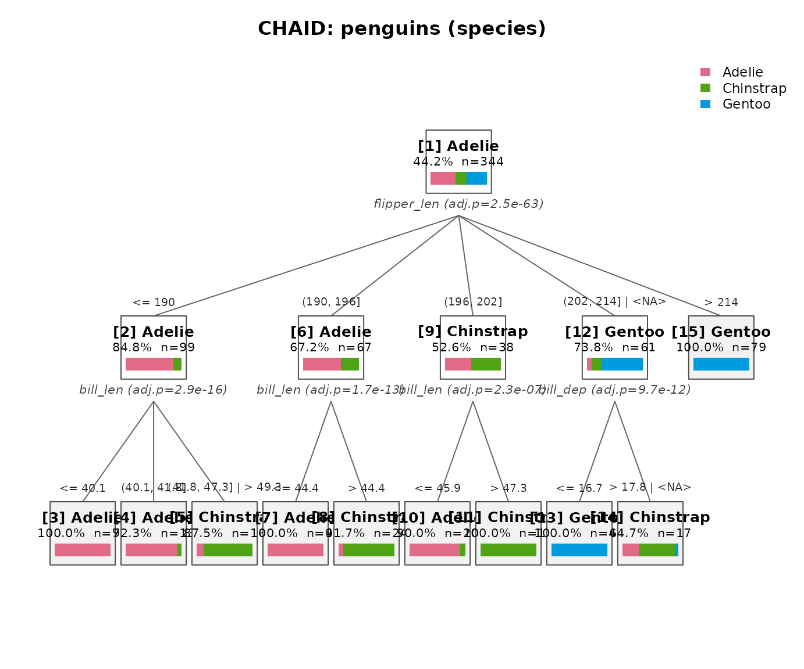
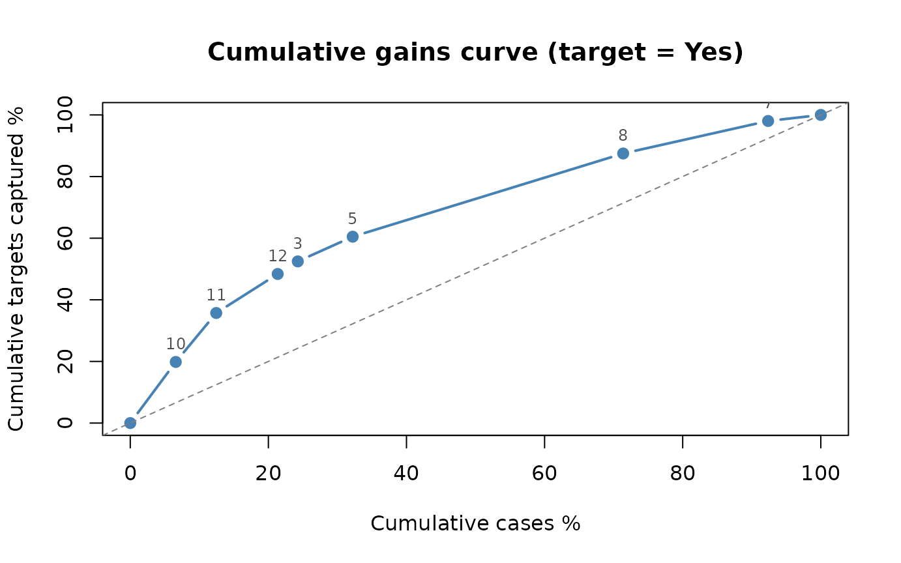
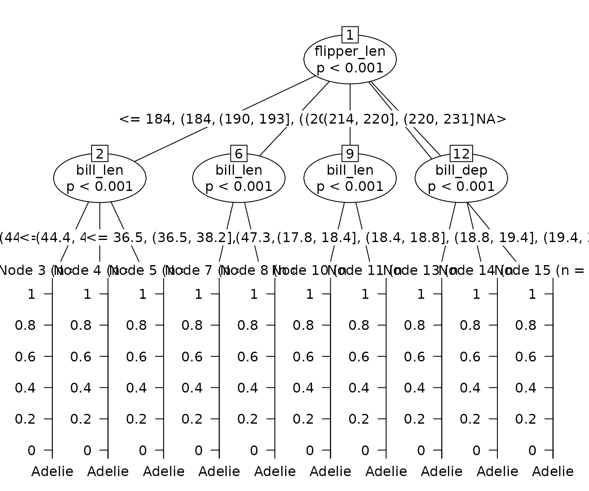

chaidr implements the CHAID (Chi-squared Automatic Interaction Detection) and Exhaustive CHAID decision tree algorithms in base R, following the IBM SPSS Statistics Algorithms specification. Unlike binary trees such as CART, CHAID produces multi-way splits driven by hypothesis tests: categories of each predictor are merged while they are statistically similar, and the node is split by the predictor with the smallest Bonferroni-adjusted p value.
This vignette is a compact tour of the package. A much more detailed
tutorial (algorithm internals, Exhaustive CHAID trade-offs, weights,
misclassification costs, ordinal responses, and every visualization
backend) is available in Japanese in the companion vignette
vignette("chaidr-ja").
Quick start
The penguins data set (bundled with R >= 4.5) mixes
continuous predictors with missing values, both of which CHAID handles
natively.
library(chaidr)
data(penguins)
fit <- chaid(species ~ ., data = penguins,
control = chaid_control(min_parent = 30, min_child = 10))
print(fit)
#> CHAID decision tree (method = "chaid")
#> Response: species (categorical)
#> Valid cases: 344 (data: 344 rows)
#>
#> [1] root: Adelie (44.2%), n=344 | split: flipper_len (adj.p=2.48e-63, chi2=328.5, B=714)
#> [2] flipper_len in {<= 190}: Adelie (84.8%), n=99 | split: bill_len (adj.p=2.92e-16, chi2=78.21, B=28)
#> [3] bill_len in {<= 40.1}: Adelie (100.0%), n=70 *
#> [4] bill_len in {(40.1, 41.8]}: Adelie (92.3%), n=13 *
#> [5] bill_len in {(41.8, 47.3] | > 49.3}: Chinstrap (87.5%), n=16 *
#> [6] flipper_len in {(190, 196]}: Adelie (67.2%), n=67 | split: bill_len (adj.p=1.66e-13, chi2=58.69, B=9)
#> [7] bill_len in {<= 44.4}: Adelie (100.0%), n=43 *
#> [8] bill_len in {> 44.4}: Chinstrap (91.7%), n=24 *
#> [9] flipper_len in {(196, 202]}: Chinstrap (52.6%), n=38 | split: bill_len (adj.p=2.31e-07, chi2=30.78, B=8)
#> [10] bill_len in {<= 45.9}: Adelie (90.0%), n=20 *
#> [11] bill_len in {> 47.3}: Chinstrap (100.0%), n=18 *
#> [12] flipper_len in {(202, 214] | <NA>}: Gentoo (73.8%), n=61 | split: bill_dep (adj.p=9.69e-12, chi2=56.14, B=15)
#> [13] bill_dep in {<= 16.7}: Gentoo (100.0%), n=44 *
#> [14] bill_dep in {> 17.8 | <NA>}: Chinstrap (64.7%), n=17 *
#> [15] flipper_len in {> 214}: Gentoo (100.0%), n=79 *Continuous predictors such as flipper_len are
discretized into up to 10 quantile bins before growing; statistically
similar bins are then merged back, producing multi-way splits. Groups
containing <NA> show where missing values were merged
as a floating category. Terminal nodes are marked with
*.
plot(fit, main = "CHAID: penguins (species)")
Prediction uses the standard S3 interface:
pred <- predict(fit, penguins) # class labels (factor)
mean(pred == penguins$species) # training accuracy
#> [1] 0.9622093
round(predict(fit, head(penguins, 3), type = "prob"), 3) # probabilities
#> Adelie Chinstrap Gentoo
#> [1,] 1 0 0
#> [2,] 1 0 0
#> [3,] 1 0 0
predict(fit, head(penguins, 3), type = "node") # terminal node ids
#> [1] 3 3 7The algorithm in brief
At each node CHAID repeats three phases:
-
Merge – for every predictor, iteratively merge the
pair of (allowable) categories with the least significant difference in
the response, until all remaining pairs are significant
(
alpha_merge). Ordinal predictors may merge adjacent categories only; nominal predictors may merge any pair. -
Split – compute a Bonferroni-adjusted p value for
each merged predictor and split by the best one if adjusted p <=
alpha_split. - Stop – otherwise (or when depth/size limits are reached) the node becomes terminal.
The significance test is selected by the response type:
| Response | Test |
|---|---|
factor (nominal) |
Pearson chi-squared (or likelihood ratio G²) |
ordered |
Goodman row-effects model (likelihood ratio H²) |
numeric |
One-way ANOVA F |
The main knobs of chaid_control() (defaults match the
SPSS UI):
| Parameter | Default | Meaning |
|---|---|---|
alpha_merge |
0.05 | keep merging while pairwise p exceeds this |
alpha_split |
0.05 | split when adjusted p is at or below this |
max_depth |
3 | maximum tree depth |
min_parent |
100 | minimum cases to attempt a split |
min_child |
50 | minimum cases per child node |
n_bins |
10 | target quantile bins for continuous predictors |
Exhaustive CHAID
method = "exhaustive" keeps merging each predictor all
the way down to two categories and then picks the most significant
configuration from the whole merge history, avoiding the local optima of
the standard greedy merge. With the Titanic data it discovers additional
structure below a coarser first split:
tit <- as.data.frame(Titanic)
fit_std <- chaid(Survived ~ Class + Sex + Age, data = tit, freq = tit$Freq)
fit_ex <- chaid(Survived ~ Class + Sex + Age, data = tit, freq = tit$Freq,
method = "exhaustive")
print(fit_ex)
#> CHAID decision tree (method = "exhaustive")
#> Response: Survived (categorical)
#> Valid cases: 2201 (data: 24 rows, dropped: 8 rows)
#>
#> [1] root: No (67.7%), n=2201 | split: Sex (adj.p=6.91e-101, chi2=456.9, B=3)
#> [2] Sex in {Male}: No (78.8%), n=1731 | split: Age (adj.p=4.55e-06, chi2=23.12, B=3)
#> [3] Age in {Child}: No (54.7%), n=64 *
#> [4] Age in {Adult}: No (79.7%), n=1667 | split: Class (adj.p=8.53e-07, chi2=37.99, B=30)
#> [5] Class in {1st}: No (67.4%), n=175 *
#> [6] Class in {2nd}: No (91.7%), n=168 *
#> [7] Class in {3rd}: No (83.8%), n=462 *
#> [8] Class in {Crew}: No (77.7%), n=862 *
#> [9] Sex in {Female}: Yes (73.2%), n=470 | split: Class (adj.p=4.44e-28, chi2=127.4, B=30)
#> [10] Class in {1st, 2nd, Crew}: Yes (92.7%), n=274 | split: Class (adj.p=0.0263, chi2=9.384, B=12)
#> [11] Class in {1st}: Yes (97.2%), n=145 *
#> [12] Class in {2nd, Crew}: Yes (87.6%), n=129 *
#> [13] Class in {3rd}: No (54.1%), n=196 *Note the freq argument: frequency weights make the fit
on aggregated data identical to the fit on the expanded case-level
data.
The two methods redistribute the Bonferroni penalty differently, which matters when nominal predictors with many levels are present – see the Japanese vignette for benchmarks, a simulation of the false-positive bias, and practical guidance on choosing between them.
Reporting
Terminal-node summaries, decision rules (as text, SQL, or R expressions), and a p-value-based predictor importance:
tb <- chaid_table(fit, target = "Gentoo")
tb[, setdiff(names(tb), "rule")]
#> node depth n pct_n prediction p_Adelie p_Chinstrap p_Gentoo response_rate
#> 1 1 0 344 100.0 Adelie 0.4419 0.1977 0.3605 0.3605
#> 2 3 2 70 20.3 Adelie 1.0000 0.0000 0.0000 0.0000
#> 3 4 2 13 3.8 Adelie 0.9231 0.0769 0.0000 0.0000
#> 4 5 2 16 4.7 Chinstrap 0.1250 0.8750 0.0000 0.0000
#> 5 7 2 43 12.5 Adelie 1.0000 0.0000 0.0000 0.0000
#> 6 8 2 24 7.0 Chinstrap 0.0833 0.9167 0.0000 0.0000
#> 7 10 2 20 5.8 Adelie 0.9000 0.1000 0.0000 0.0000
#> 8 11 2 18 5.2 Chinstrap 0.0000 1.0000 0.0000 0.0000
#> 9 13 2 44 12.8 Gentoo 0.0000 0.0000 1.0000 1.0000
#> 10 14 2 17 4.9 Chinstrap 0.2941 0.6471 0.0588 0.0588
#> 11 15 1 79 23.0 Gentoo 0.0000 0.0000 1.0000 1.0000
#> index
#> 1 100.0
#> 2 0.0
#> 3 0.0
#> 4 0.0
#> 5 0.0
#> 6 0.0
#> 7 0.0
#> 8 0.0
#> 9 277.4
#> 10 16.3
#> 11 277.4
head(chaid_rules(fit, format = "sql"), 3)
#> node
#> 1 3
#> 2 4
#> 3 5
#> rule
#> 1 bill_len <= 40.100000000000001 AND flipper_len <= 190
#> 2 (bill_len > 40.100000000000001 AND bill_len <= 41.799999999999997) AND flipper_len <= 190
#> 3 ((bill_len > 41.799999999999997 AND bill_len <= 47.299999999999997) OR bill_len > 49.299999999999997) AND flipper_len <= 190
chaid_importance(fit)
#> variable n_splits min_p_adj importance importance_pct
#> 3 flipper_len 1 2.484038e-63 62.604842 86.6
#> 1 bill_len 3 2.915163e-16 7.692892 10.6
#> 2 bill_dep 1 9.690029e-12 1.953006 2.7Gains and lift analysis (which nodes capture the target class most efficiently), and validation of a fitted tree on holdout data:
g <- chaid_gains(fit_std, target = "Yes")
print(g)
#> CHAID gains table (target = Yes)
#> Overall response rate: 0.323
#>
#> node n pct_n resp pct_resp rate index cum_pct_n cum_pct_resp cum_lift
#> 10 145 6.59 141 19.83 0.9724 301.0 6.59 19.83 3.009
#> 11 129 5.86 113 15.89 0.8760 271.2 12.45 35.72 2.869
#> 12 196 8.91 90 12.66 0.4592 142.1 21.35 48.38 2.266
#> 3 64 2.91 29 4.08 0.4531 140.3 24.26 52.46 2.162
#> 5 175 7.95 57 8.02 0.3257 100.8 32.21 60.48 1.878
#> 8 862 39.16 192 27.00 0.2227 69.0 71.38 87.48 1.226
#> 7 462 20.99 75 10.55 0.1623 50.3 92.37 98.03 1.061
#> 6 168 7.63 14 1.97 0.0833 25.8 100.00 100.00 1.000
plot(g)
set.seed(9)
idx <- sample(nrow(penguins), 244)
fit_tr <- chaid(species ~ ., data = penguins[idx, ],
control = chaid_control(min_parent = 30, min_child = 10))
chaid_validate(fit_tr, penguins[-idx, ])
#> CHAID stability assessment (validation n = 100 )
#> Validation accuracy: 0.83
#> (rate = share of the predicted class, or the mean for continuous responses.
#> Nodes with a large |diff_rate| do not replicate on the validation data.)
#>
#> node prediction train_pct_n test_pct_n train_rate test_rate diff_rate
#> 2 Adelie 28.28 30 0.8841 0.7667 -0.1174
#> 4 Adelie 18.03 13 1.0000 1.0000 0.0000
#> 5 Chinstrap 4.10 6 0.7000 0.8333 0.1333
#> 6 Chinstrap 8.61 7 1.0000 1.0000 0.0000
#> 7 Gentoo 8.20 8 0.5500 0.3750 -0.1750
#> 8 Gentoo 10.25 10 0.9200 0.7000 -0.2200
#> 9 Gentoo 22.54 26 1.0000 0.9615 -0.0385Visualization
The built-in plot() method (shown above) needs no extra
packages. Three optional backends are available:
chaid_graphviz(fit) # 'Graphviz' via DiagrammeR (publication quality)
chaid_dot(fit, file = "tree.gv") # raw DOT export for the dot CLI
chaid_plotly(fit) # interactive htmlwidget with hover detailsA fitted tree can also be converted to a partykit::party
object, which opens up the partykit and ggparty plotting ecosystems:
pt <- chaid_as_party(fit, penguins) # pass the data used for fitting
plot(pt)
Further reading
-
vignette("chaidr-ja")– detailed tutorial (in Japanese): algorithm internals, standard vs. Exhaustive CHAID, weights, missing-value handling, multiplicity adjustment across predictors, comparison with CART, misclassification costs, ordinal responses, and all visualization backends.
References
- Kass, G. V. (1980). An exploratory technique for investigating large quantities of categorical data. Applied Statistics, 29(2), 119–127.
- Biggs, D., de Ville, B., & Suen, E. (1991). A method of choosing multiway partitions for classification and decision trees. Journal of Applied Statistics, 18(1), 49–62.
- IBM Corp. IBM SPSS Statistics Algorithms – “CHAID and Exhaustive CHAID Algorithms”.